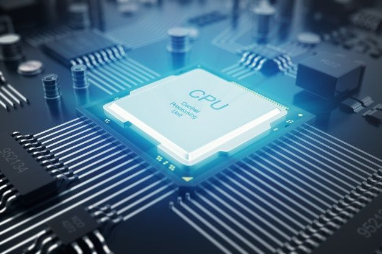
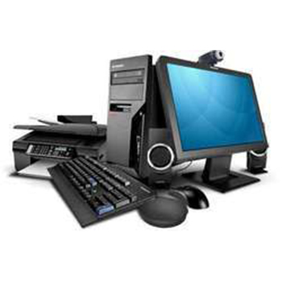

Fysieke laag bestaat uit vele en vele onderdelen, we beginnen eerst bij de processor. De processor bevindt zich in de fysieke laag van een apparaat.
De processor, ook wel CPU (Computer Processing Unit), is het hart van een computer- of elektronisch apparaat en is verantwoordelijk voor het uitvoeren van berekeningen, het verwerken van gegevens en het beheren van de algehele
werking van het systeem.
Het centrale deel van de CPU is de Rekenkern; dit is het deel waar daadwerkelijke berkeningen plaatsvinden. Moderne processors kunnen 1 of meer
rekenkernen hebben, die onafhankelijk van elkaar kunnen werken. Dit wordt ook wel multi-core technologie genoemd. Ook zijn er in de processor ook veel registers, kleine opslaglocaties, te vinden die
binnen de CPU die onmiddelijk toegankeling zijn voor bewerkingen. Ze worden gebruikt om extreem snel en essentieel voor de prestaties van de CPU.
Daarnaast kan je ook de IU (Instruction Unit) en ALU (Arithmetic Logic Unit) vinden. De IU haalt instrucies op uit het gehugen en decodeert ze zodat de CPU ze kan begrijpen en uitvoeren.
De ALU doet het uitindelijek werk allemaal, die rekent de daarwerktelokle rekenkundige en logische berwerkingen uit. Denk hierbij aan aftrekken, optellen, vermenigvuldigen, delen en vergelijken.
Het resultaat van dee bwerkingen wordt vervolgens opgeslagen in de registers, ook kan de ALU informatie uit de registers opzoeken en gebruiken.
De CU (Control Unit) is de controle eenheid en coordineert de werking van de CPU door de volgorde van instructies te bepalen en de juiste gegevenes
naar de juiste componenten te sturen door middel van timing en stuursignalen. De meeste onderdelen in de CPU worden door de CU beheerd.
John van Neumann nam de CU als onderdeel van de 'Von Neumann-architectuur' op.
Bovendien is er ook nog de 'Bus'; dit is ook een belangrijk onderdeel van een elektronisch systeem en stelt de CPU in staat om te communiceren met andere componenten en apparaten binnen het
systeem. Met communiceren bedoel ik het uitwisselen van gegevens waardoor het systeem als geheel kan funtioneren. Het ontwerp en de prestaties van de Bus
zijn van invloed op de algehele systeemprestaties en de mogelijkheid om randapparatuur en de uitbreidingskaarten aan te sluiten.
Instructiebewerking: de CPU haalt continu instructies op uit het geheugen van een programma en decodeert deze. Deze instructies
omvatten taken zoals rekenkundige bewerkingen, gegevensmanipulatie (lezen, schrijven, wijzigen, verplaatsen en kopieren van gegevens in geheugen), logische bewerkingen (gebruik van AND, OR en NOT voor beslissingen en gegevensmanipulatie)
en sprongistructies (bapaling van de volgorde waarop dingen worden berwerkt door middel van IF-statements en loops) om de uitvroeringsvolgorde van het programma te beheren. Moderne processors bevtten op meerdere niveaus om veelgebruikte
gegevens en instructies op te slaan en de toegangssnelheid te verbeteren. De processor beheert de Gegevenschachegeheugen om ervoor te zorgen dat
de meest relevante gegevens beschikbaar zijn voor verwerking. Bovendien beheert de CPU de interne tijd en synchroniseert de timing van alle bewrkingen in het systeem
Moderne processorts kunnen beveiligingsfuncties bevatten, zols hardwarematige versleuteling en virtualisatie om de integriteit en beveiliging
van gegevens te waarborgen. Processsort unen energiebesparende technologien gebruiken om het energieverbruik te optimaliseren, zols het verlagen van
de kloksnelheid en het in- en uitschakelen van kernen wanneer ze niet actief zijn.
Kortom is de processor/CPU het centrale rekenorgaan van een computer en voert een brede scala aan taken uit om de functioanliteit en prestaties van een systeem
te onderstuenen. De efficientie en snelheid van de CPU zijn van cruciaal belang voor het algehele prestatie van een computer.
Werkgeheugen RAM en Alleen lezen geheugen ROM zijn 2 verschillende soorten computergehuegen die essentiele rollen spelen in de werkig van ee computer.
RAM is het primaire tijdelijke opslgmeduim van een computer. Het wordt gebruikt om actief draaiende programma's en gegevens op te slaan terwijl de computer aanstaat. Het is een vluchtig geheugen wat inhoudt dat als de comuter uitgeschakeld wordt, worden alle gegevens gewist. Hierdoor heeft het ook een snelle geheugen.Je kan veel sneller in een RAm geheugen komen dan een ander systeem zoals bij een harde schijf. Hierdoor kan de CPU snel toegang rkijgen tot gegevens en programma's voor verwerking. Moderne computers hebben doorgaans aanzienlijke hoeveelheden RAM, verierens van enkele GB's tot tientalle GB's, afhankelijk van de computer en de gebruiksscenario. RAM kan ook nog eens mulitasken door verschillende programma's heen. Het stelt de computer in staat om snel tussen geopende toepassingen te schakelen. RAM is daarnaast nog eens willikeurig toegangkelijk, wat betekent dat de CPU willekeurig elke locatie in het geeugen kan benaderen zonder in een specefieke volgorde te hoeven lezen of schrijven.
ROM is een type geheugen dat wordt gebruikt voor permanente opslag van gegeven die niet verloren gaan wanneer je je computer uitschakeld. Het behoudt zijn inhoud, vandaar de naam.
DE gegevens die in het ROM-geheugen zijn, zijn normalm gesproken ook net wijzigbaar door gebruikers. Ze worden meestal tijdens de making van het apparaat al geprogrammeerd en is bedoeld om er voorgoed op te blijven.
ROM wordt ook vaak gebruikt om firmware op te slaan, wat de instructies en software bevat die nodig zijn voor de werking van hardwarecomponenten en het opstarten van het bestuursssysteem van een somputer of aparaat.
In een typische computer werkt RAM samen met ROM om programma's en gegevens op te slaan, waarbij RAM fungeert
als de plaats waar actieve processen worden uitgevoerd en ROM als
de opslagplaats voor permanente software en instructies die nodig zijn om het systeem op te starten.
Beide typen geheugen zijn van cruciaal belang voor een goed functionerende computer.
Een moederbrpod is het hoofdcircuit van een computer, waarop alleessentiele hardwarecomponenten zijn gemonteerd. Het fungeert als een schakelbord en verbindt de CPU, RAM,
en andere onderdelen zoals grafsiche kaarten en opslagapparaten. Het moederbord bevat ook firmwares,die opstartfuncties voor de computer beheert.
Ee firmware is een hardware dat ingeprogrammeerd is.
Dit kan eenmalige basis geschieden, maar moderne technieken zoals flashgeheugen maken het ook mogelijk om de firmware te vernieuwen.
Verschillende poosrten en connectors op het moederbrod maken het mogelijk om randapparatuuraan te sluiten, zoals toestenborden, muizen en opslagapparaten. Moederborden zijn verkrijgbaar in verschillende form factors, die fysieke grootte en mogelijkheden van het bord bepalen.
Het is een cruciaal onderdeel van het functioneren en uitbreiden van en computer.
Een System-on-a-Chip (SoC) is een geintergreede schakelcircuit duie alle belangrijke componenten van een computer-of elektronisch systeem combineert op een enkele chip. Deze componentenomvatten de CPU, GPU (grafische verwerkingseenheid), RAM, opslag en vaak ook verschillende hardware interfaces zoals USBM, Wi-Fi en Bluetooth. SoCs worden vaak gebruikt in mobiele apparaten zoals smartphones en tablets, maar ook in andere toepassingen zoals slimme apparaten, embedden systemen en IoT (Internet of Things) apparaten. Ze bieden een compacte en energiezuinige oplossing voor het aandrijven van diverse elektronische apparaten. De integratie van meerdere funcites op een chip vermindert het energieverbruik en verbetert prestaties.
Permanente geheugen, ook wel opslagmedia genoemd, verwijst naar de herdwarecomponenten in een computer of apparaat duie gegevenes opslaan en behouden, zelfs wanneer de stroom wordt uitgeschakeld. Dit omvat harde schjiven, solid-state drives, optische schjiven zoals cd's en dvd's en flashgeheugen zoals USB-sticks en geheugenkaarten. Permanent geheugen wordt gebrukt voor het opslaan van bestuuringssystemen, programma's, documenten, media en andere gegevens die niet verloren mogen gaan bij het uitschakelen van het apparaat. Het is trager om toegang tot permanente geheugen te krijgen in vergelijking met RAM, maar het biedt duurzame en langdurige oplsag van informatie.
Randapparatuur zijn hardwarecomponenten die worden aangesloten op een computer of ander lektronisch apparaat om extra functioanliteit toe te voegen of om gegevens in te voeren en weer te geven. Dit omvat apparaten zoals toetsborden, muizen, monitoren, printers, scanners, webcams, en luidsprekers. Ze dienen als interfaces tussen de gebruikter en de computer en helpen bij taken zoals tekstinvoer, beeldweergave, gegevensopslag en communicatie. Randapparatuur kan zowel intern als extern zijn. Interne randapparatuur wordt rechtstreeks op het moederbord van de computer aangesloter zoals een interne harrde schijf. Externe randapparatuur wordt via poorten en connectors aan de computer gekoppeld, zoals externe harde schijf via USB. Veel randapparatuur vereist specefieke stuurprogramma's om goed te functioneren op een computer en moderne systemen ondersteunen plug-and-play, wat betekent dat ze automatisch stuurprogramma's detecteren en installeren wanneer randapparatuur wordt aangesloten. Randapparatuur kan sterk varieren in doel en complexiteit en spelen een cruciale rol bij het verbeteren van de gebruikservaring en het uitbreiden van de mogelijkheden van de computer- en elektronische apparaten.
Kabels zijn fysieke snoeren of draden die worden gebruikt om elektrische signalen, gegevens of stroom tussen elektronische apparaten te transporteren. Ze kunnen verschillende vormen en maten hebben, afhankelijk van het doel en de toepassing,
zoals stroomkabels, dataverbindingskabels, en multimedia-aansluitkabels. De kwaliteit en specificaties van kabels beïnvloeden de snelheid, betrouwbaarheid en efficiëntie van gegevensoverdracht en stroomlevering tussen apparaten. Het juiste gebruik van kabels is essentieel om een stabiele en foutloze werking van elektronische systemen te garanderen.
Interfaces verwijzen naar de methoden waarmee verschillende apparaten, systemen of gebruikers met elkaar communiceren of verbinding maken. Ze kunnen fysiek of softwarematig zijn en dienen om gegevens, signalen of commando's over te dragen. Voorbeelden van fysieke interfaces zijn USB-poorten, HDMI-connectors en Ethernet-aansluitingen, die de verbinding tussen apparaten mogelijk maken. Softwarematige interfaces omvatten gebruikersinterfaces (UI's) zoals grafische gebruikersinterfaces (GUI's) op computers en touchscreens op smartphones, waarmee gebruikers met software kunnen interacteren. Effectieve interfaces zijn cruciaal voor een naadloze interactie tussen mensen en technologie, en ze variëren sterk afhankelijk van het doel en de context van de interactie.